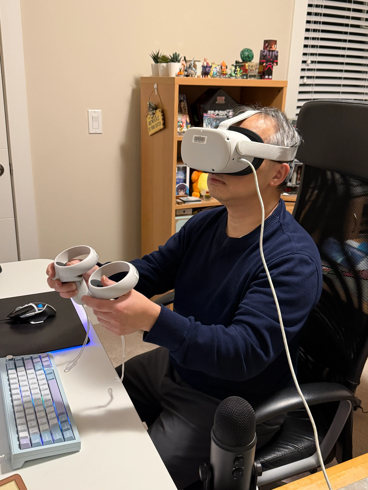

ETHAN LUM
Initiation // Bio
I am a VR Developer and Web Engineer specializing in immersive, high-performance digital environments. Bridging the gap between 3D space and web architecture, I build tools that push technical boundaries. My work is defined by a relentless drive to optimize complex systems and a cyberpunk-inspired ethos: raw, functional, and visually striking. I thrive in the neon-lit intersection of technical constraint and creative execution, transforming abstract backend data and spatial computing challenges into intuitive, visceral user experiences.
Process_Analyses
Lumina // AI Talent Intelligence
Lumina was conceived at StormHacks 2025 to solve a massive data bottleneck: the manual extraction and verification of technical talent. The core problem was transforming unstructured, chaotic data streams—thousands of resumes and decentralized GitHub repositories—into legible, actionable intelligence. Aligning with my ethos of building highly functional, optimized systems, I wanted to create an application that didn't just parse data, but intelligently interrogated it like a digital archivist.
Initially, the challenge was balancing deep analysis with processing speed. Our early attempts at validating candidate claims against actual code resulted in sluggish response times due to the sheer volume of GitHub API calls and raw text processing. To iterate and overcome this, we architected a 4-phase agentic workflow utilizing Google Gemini. Rather than brute-forcing the data, our AI agents worked in sequential stages: gathering context from parsed PDFs, intelligently discovering relevant repositories, performing deep code evaluation, and synthesizing a final score.
To further optimize the pipeline, we integrated Pinecone for vector search, enabling semantic matching between job requirements and resume embeddings rather than relying on brittle keyword matching. Built on Next.js 15, React 19, and Tailwind CSS, the frontend translates this massive backend computation into a clean, highly responsive UI—presenting real-time analysis progress without overwhelming the user. Lumina demonstrates my core capability as a full-stack engineer: taking overwhelming datasets, rethinking the underlying architecture to leverage complex AI pipelines, and surfacing that data through an intuitive interface. It is the literal embodiment of extracting the hidden signal from the digital noise.


IAT_445: Battery_Protocol // VR Game
For my IAT 445 project, I developed a narrative-driven VR puzzle game set in a decaying cyberpunk metropolis. The premise revolves around a robot traversing treacherous industrial levels to locate a rare battery and save a dying companion from powering down. Aligning with my design ethos, the environment is saturated with a gritty, neon-drenched atmosphere. However, the core gameplay loop presented a significant technical challenge: a dynamic scaling mechanic that allows the player to shrink to the size of a mouse to navigate air vents, or grow to bypass massive obstacles.
Implementing extreme scale changes in VR is notoriously difficult due to motion sickness and physics engine clipping. My initial prototype used an instantaneous scale transformation tied to a controller input. Playtesting immediately revealed this was violently disorienting, breaking immersion and causing severe nausea. Furthermore, the sudden shift in the player's collision mesh often resulted in falling through the floor or getting permanently stuck inside geometry. To iterate and solve this, I completely rebuilt the scaling logic. I implemented a smooth mathematical transition using Lerp over a fixed duration, coupled with a localized particle effect to anchor the player's vision during the shift.
To resolve the physics breaking, I engineered a custom volumetric raycast check that verifies the target size has adequate clearance before allowing the scale change to execute. If a player attempts to grow while inside a confined vent, the system triggers a haptic feedback warning and prevents the action. The final result is a seamless, highly engaging spatial puzzle mechanic. This project highlights my ability to take an ambitious spatial computing concept, identify severe UX and physical limitations through user testing, and iterate towards a polished, comfortable VR experience.
'">
[WAITING FOR FILE]Save img2.webp to this folder